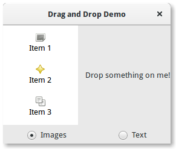

19. Arraste e solte¶
Nota
As versões do PyGObject < 3.0.3 contêm um bug que não permite arrastar e soltar para funcionar corretamente. Portanto, uma versão do PyGObject >= 3.0.3 é necessária para os exemplos a seguir funcionarem.
Configurar arrastar e soltar entre widgets consiste em selecionar uma fonte de arrasto (o widget do qual o usuário começa a arrastar) com o método Gtk.Widget.drag_source_set(), selecionando um destino de arrasto (o widget que o usuário coloca em) com o método Gtk.Widget.drag_dest_set() e depois manipular os sinais relevantes em ambos os widgets.
Em vez de usar Gtk.Widget.drag_source_set() e Gtk.Widget.drag_dest_set() alguns widgets especializados requerem o uso de funções específicas (como Gtk.TreeView e Gtk.IconView).
Um arrastar e soltar básico requer apenas que a fonte se conecte ao sinal “drag-data-get” e que o destino se conecte ao sinal “drag-data-received”. Coisas mais complexas, como áreas de queda específicas e ícones de arrastar personalizados, exigirão que você se conecte a sinais adicionais e interaja com o objeto Gdk.DragContext que fornece.
Para transferir dados entre a origem e o destino, você deve interagir com a variável Gtk.SelectionData fornecida no “drag-data-get” e sinais de “drag-data-received” usando os métodos get e set Gtk.SelectionData.
19.1. Alvos de Entrada¶
Para permitir que a fonte de arrastar e o destino saibam quais dados estão recebendo e enviando, uma lista comum de Gtk.TargetEntry's é necessária. A Gtk.TargetEntry descreve um dado que será enviado pela fonte de arrasto e recebido pelo destino do arrasto.
Existem duas maneiras de adicionar Gtk.TargetEntry's a uma origem e destino. Se o arrastar e soltar for simples e cada entrada de destino for de um tipo diferente, você pode usar o grupo de métodos mencionado aqui <Gtk.Widget.drag_source_add_text_targets>().
Se você precisar de mais de um tipo de dados ou quiser fazer coisas mais complexas com os dados, você precisará criar o Gtk.TargetEntry's usando o método Gtk.TargetEntry.new().
19.2. Sinais de Origem do Arrasto¶
| Nome | Quando é emitido | Propósito comum |
|---|---|---|
| drag-begin | Usuário inicia um arrasto | Configurar ícone de arrastar |
| drag-data-get | Quando dados arrastados são solicitados pelo destino | Transferir dados de arrastar da origem para o destino |
| drag-data-delete | Quando um arrasto com a ação Gdk.DragAction.MOVE é concluído | Excluir dados da fonte para completar o ‘movimento’ |
| drag-end | Quando o arrasto estiver completo | Desfazer qualquer coisa feita no drag-begin |
19.3. Sinais de Destino do Arrasto¶
| Nome | Quando é emitido | Propósito comum |
|---|---|---|
| drag-motion | O ícone de arrasto se move sobre uma área de soltar | Permitir que apenas algumas áreas sejam soltas |
| drag-drop | O ícone é solto em uma área de arrasto | Permitir que apenas algumas áreas sejam soltas |
| drag-data-received | Quando dados arrastados são recebidos pelo destino | Transferir dados de arrastar da origem para o destino |
19.4. Exemplo¶
1 2 3 4 5 6 7 8 9 10 11 12 13 14 15 16 17 18 19 20 21 22 23 24 25 26 27 28 29 30 31 32 33 34 35 36 37 38 39 40 41 42 43 44 45 46 47 48 49 50 51 52 53 54 55 56 57 58 59 60 61 62 63 64 65 66 67 68 69 70 71 72 73 74 75 76 77 78 79 80 81 82 83 84 85 86 87 88 89 90 91 92 93 94 95 96 97 98 99 100 101 102 103 104 105 106 107 108 109 110 111 112 113 | import gi
gi.require_version('Gtk', '3.0')
from gi.repository import Gtk, Gdk, GdkPixbuf
(TARGET_ENTRY_TEXT, TARGET_ENTRY_PIXBUF) = range(2)
(COLUMN_TEXT, COLUMN_PIXBUF) = range(2)
DRAG_ACTION = Gdk.DragAction.COPY
class DragDropWindow(Gtk.Window):
def __init__(self):
Gtk.Window.__init__(self, title="Drag and Drop Demo")
vbox = Gtk.Box(orientation=Gtk.Orientation.VERTICAL, spacing=6)
self.add(vbox)
hbox = Gtk.Box(spacing=12)
vbox.pack_start(hbox, True, True, 0)
self.iconview = DragSourceIconView()
self.drop_area = DropArea()
hbox.pack_start(self.iconview, True, True, 0)
hbox.pack_start(self.drop_area, True, True, 0)
button_box = Gtk.Box(spacing=6)
vbox.pack_start(button_box, True, False, 0)
image_button = Gtk.RadioButton.new_with_label_from_widget(None,
"Images")
image_button.connect("toggled", self.add_image_targets)
button_box.pack_start(image_button, True, False, 0)
text_button = Gtk.RadioButton.new_with_label_from_widget(image_button,
"Text")
text_button.connect("toggled", self.add_text_targets)
button_box.pack_start(text_button, True, False, 0)
self.add_image_targets()
def add_image_targets(self, button=None):
targets = Gtk.TargetList.new([])
targets.add_image_targets(TARGET_ENTRY_PIXBUF, True)
self.drop_area.drag_dest_set_target_list(targets)
self.iconview.drag_source_set_target_list(targets)
def add_text_targets(self, button=None):
self.drop_area.drag_dest_set_target_list(None)
self.iconview.drag_source_set_target_list(None)
self.drop_area.drag_dest_add_text_targets()
self.iconview.drag_source_add_text_targets()
class DragSourceIconView(Gtk.IconView):
def __init__(self):
Gtk.IconView.__init__(self)
self.set_text_column(COLUMN_TEXT)
self.set_pixbuf_column(COLUMN_PIXBUF)
model = Gtk.ListStore(str, GdkPixbuf.Pixbuf)
self.set_model(model)
self.add_item("Item 1", "image-missing")
self.add_item("Item 2", "help-about")
self.add_item("Item 3", "edit-copy")
self.enable_model_drag_source(Gdk.ModifierType.BUTTON1_MASK, [],
DRAG_ACTION)
self.connect("drag-data-get", self.on_drag_data_get)
def on_drag_data_get(self, widget, drag_context, data, info, time):
selected_path = self.get_selected_items()[0]
selected_iter = self.get_model().get_iter(selected_path)
if info == TARGET_ENTRY_TEXT:
text = self.get_model().get_value(selected_iter, COLUMN_TEXT)
data.set_text(text, -1)
elif info == TARGET_ENTRY_PIXBUF:
pixbuf = self.get_model().get_value(selected_iter, COLUMN_PIXBUF)
data.set_pixbuf(pixbuf)
def add_item(self, text, icon_name):
pixbuf = Gtk.IconTheme.get_default().load_icon(icon_name, 16, 0)
self.get_model().append([text, pixbuf])
class DropArea(Gtk.Label):
def __init__(self):
Gtk.Label.__init__(self, "Drop something on me!")
self.drag_dest_set(Gtk.DestDefaults.ALL, [], DRAG_ACTION)
self.connect("drag-data-received", self.on_drag_data_received)
def on_drag_data_received(self, widget, drag_context, x,y, data,info, time):
if info == TARGET_ENTRY_TEXT:
text = data.get_text()
print("Received text: %s" % text)
elif info == TARGET_ENTRY_PIXBUF:
pixbuf = data.get_pixbuf()
width = pixbuf.get_width()
height = pixbuf.get_height()
print("Received pixbuf with width %spx and height %spx" % (width,
height))
win = DragDropWindow()
win.connect("destroy", Gtk.main_quit)
win.show_all()
Gtk.main()
|